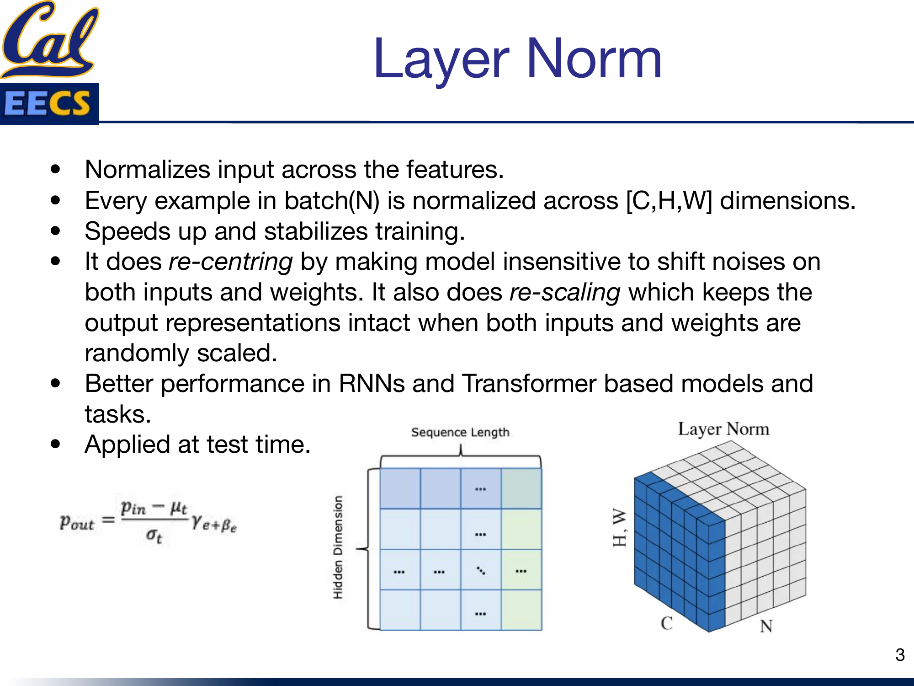
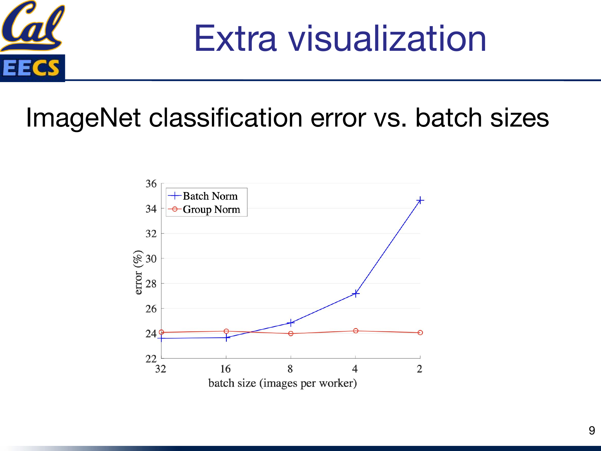
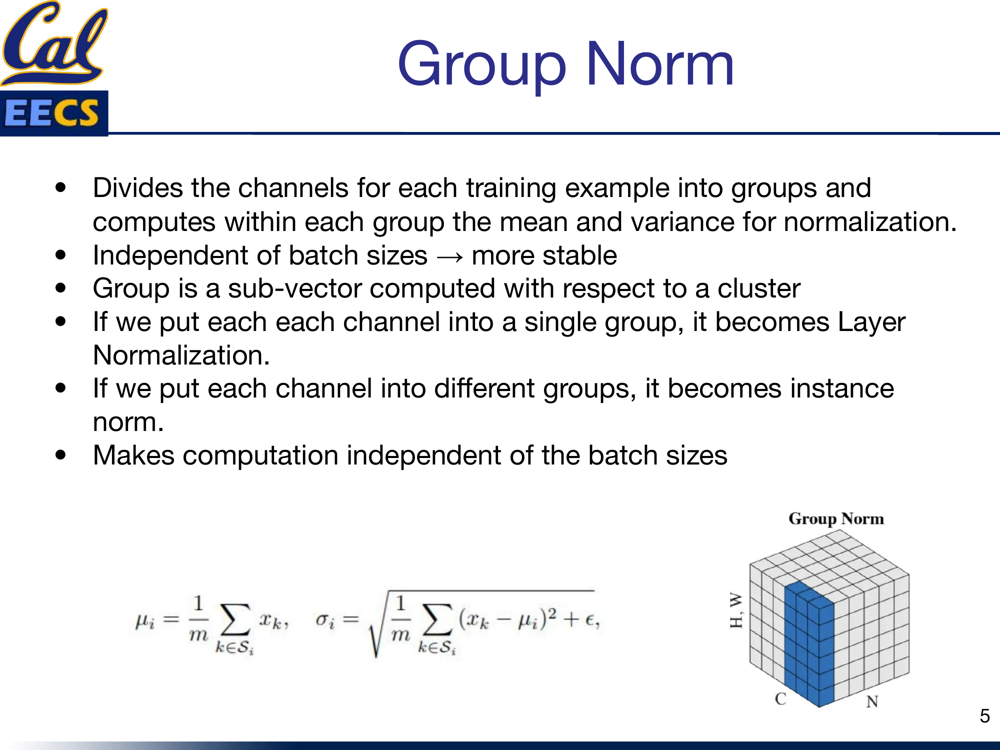
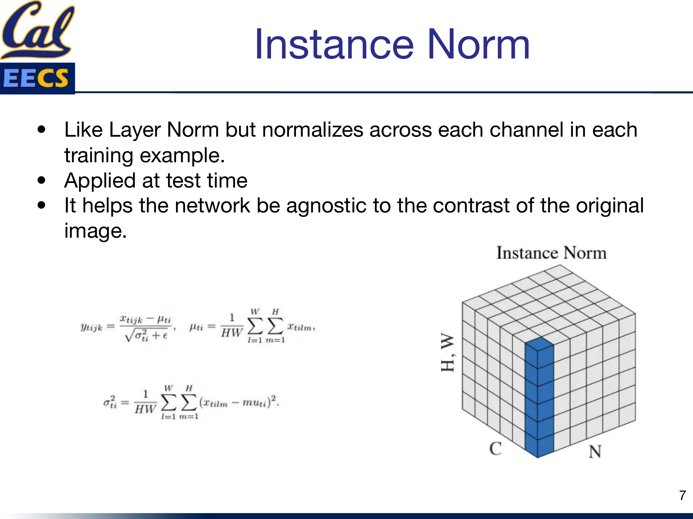
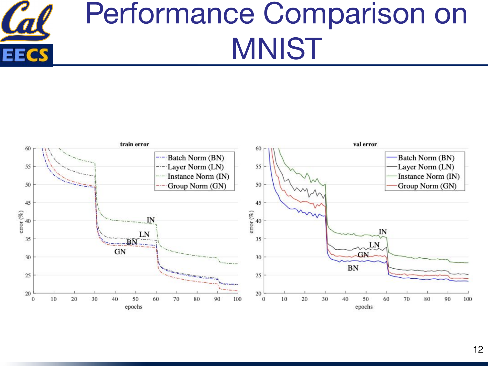

Survey of Normalization Techniques
Why Normalization Matters
If you have ever watched a training run diverge at epoch 3 or plateau for hours, the culprit is often un-normalized activations. I keep coming back to a handful of reasons why normalization is one of the first things I reach for:
- Faster optimization. Normalization prevents weights from exploding by restricting them to a certain range, so the optimizer can take larger, more confident steps.
- Unbiased features. Without normalization, features with naturally larger magnitudes dominate the gradient signal. Normalization levels the playing field.
- Implicit regularization. Adding noise through mini-batch statistics (or channel statistics) acts as a lightweight regularizer, reducing overfitting in practice.
The short version: normalization accelerates and stabilizes learning, full stop. The longer version is choosing which normalization to use, and that is what the rest of this post is about.
The Big Picture: What Normalization Does
Every normalization technique follows roughly the same template:
output = (input - mean) / std · γ + β
You compute a mean and standard deviation over some set of dimensions, normalize, then let the network learn a scale (γ) and shift (β) to recover any representation it needs. The techniques differ only in which dimensions you compute those statistics over. That single design choice changes everything about when and where a method works well.

Normalization dimensions at a glance
Layer Norm
Layer Norm normalizes each individual example across all of its features. For a single sample in the batch, you compute the mean and variance over the entire [C, H, W] volume (or, in a Transformer, across the hidden dimension).
pout = (pin - μt) / σt · γe + βe
What I like about Layer Norm:
- Re-centering: makes the model insensitive to shift noise on both inputs and weights.
- Re-scaling: keeps output representations intact when inputs and weights are randomly scaled.
- Applied at test time with the same formula -- no need to track running statistics.
Layer Norm: per-example normalization
Batch Norm
Batch Norm goes the other direction: instead of normalizing within a single example, it normalizes across the mini-batch dimension for each feature channel. You subtract the batch mean and divide by the batch standard deviation, then apply learned γ and β per channel.
pout = (pin - μc) / σc · γc + βc
Batch Norm eases optimization and enables very deep networks to converge. It also serves as a regularization technique because the per-batch statistics inject noise.
The problems I keep running into
- Small batches kill it. Batch Norm's error increases rapidly when the batch size drops below about 8. If you are on a single GPU with large images, this is a real problem.
- RNNs are a bad fit. Sequences from different samples can have different lengths, so you would need a separate normalization layer for each timestep -- space-consuming and awkward.

Batch Norm error vs. batch size
Bottom line: Batch Norm is still the champion for CNN tasks with large, fixed-size batches. Outside that sweet spot, look elsewhere.
Group Norm
Group Norm is the batch-size-independent alternative I reach for whenever Batch Norm is not viable. It divides the channels of each training example into G groups and computes mean and variance within each group.
μi = (1/m) ∑ xkσi = √( (1/m) ∑ (xk - μi)2 + ε )
The key insight: because statistics are computed per-example, there is zero dependence on batch size. Whether you are running batch size 2 or 64, Group Norm gives you the same behavior.
Two special cases worth memorizing:
- Set G = 1 (one group containing all channels) and you get Layer Norm.
- Set G = C (each channel is its own group) and you get Instance Norm.
Here is the TensorFlow implementation straight from the original paper -- it is surprisingly compact:
def GroupNorm(x, gamma, beta, G, eps=1e-5):
N, C, H, W = x.shape
x = tf.reshape(x, [N, G, C // G, H, W])
mean, var = tf.nn.moments(x, [2, 3, 4], keep_dims=True)
x = (x - mean) / tf.sqrt(var + eps)
x = tf.reshape(x, [N, C, H, W])
return x * gamma + beta

Group Norm: channel groups within each example
RMSNorm: The Efficient Modern Choice
RMSNorm is the normalization you will find inside LLaMA, Gemma, and most recent large language models. It is an extension of Layer Norm that drops the re-centering step entirely and normalizes by the root mean square of the activations instead.
RMS(a) = √( (1/n) ∑ ai2 )āi = (ai / RMS(a)) · gi
Why I prefer it for large-scale training:
- One pass instead of two. Layer Norm needs a pass to compute the mean and another for variance. RMSNorm only needs one pass to compute the RMS -- this is real wall-clock savings at scale.
- Re-scaling invariance and implicit learning rate adaptation, without the cost of re-centering.
- Better with high-variance data, since it handles large activation magnitudes more gracefully than standard Layer Norm.
Instance Norm and Weight Norm
These two are more specialized, but worth knowing.
Instance Norm
Instance Norm is like Layer Norm but normalizes across each channel independently in each training example. It is applied at test time, just like Layer Norm.
ytijk = (xtijk - μti) / √(σti2 + ε)
The main use case: it makes the network agnostic to the contrast of the original image, which is why it became the default in style transfer and image generation tasks.
Weight Norm
Weight Norm takes a completely different approach -- it normalizes the weights of the layer rather than the activations. It separates the weight vector into a magnitude and a direction:
w = (g / ||v||) · v
This decoupling gives you a smoother loss landscape and more stable training. I have found it most useful in CNN tasks, often as a complement to other normalization methods.

Instance Norm and Weight Norm diagrams
MNIST Convergence: What I Saw in Practice
I ran Batch Norm, Layer Norm, Instance Norm, and Group Norm on MNIST to see how they compare on a simple task:
- Training error: Group Norm and Batch Norm converge fastest.
- Validation error: Batch Norm ultimately achieves the lowest error, suggesting its implicit regularization from batch statistics gives it an edge on well-behaved, large-batch CNN tasks.

Training & validation error curves on MNIST
When to Use What
Here is my decision process:
- Transformer or RNN? Use Layer Norm (or RMSNorm if you want efficiency).
- CNN with large batches? Use Batch Norm.
- CNN with small/variable batches? Use Group Norm.
- Style transfer or generative images? Use Instance Norm.
- Want a smoother loss landscape on CNNs? Try Weight Norm.
- Training a large language model from scratch? Use RMSNorm.
Quick Reference
| Technique | Normalizes Over | Batch Dependent? | Best For | Test Time |
|---|---|---|---|---|
| Batch Norm | Mini-batch (N) per channel | Yes | CNNs, large batches | Running stats |
| Layer Norm | All features per example [C,H,W] | No | Transformers, RNNs | Same formula |
| Group Norm | Channel groups per example | No | CNNs, small batches | Same formula |
| RMSNorm | All features (RMS only) | No | LLMs, high-variance data | Same formula |
| Instance Norm | Per channel, per example | No | Style transfer | Same formula |
| Weight Norm | Weight vectors | No | CNNs, smooth optimization | Same formula |
This post is based on my presentation "Survey of Normalization Techniques" at Berkeley EECS. The original slides, including all diagrams and the full algorithm pseudocode, are available in Normalization_Techniques.pdf.